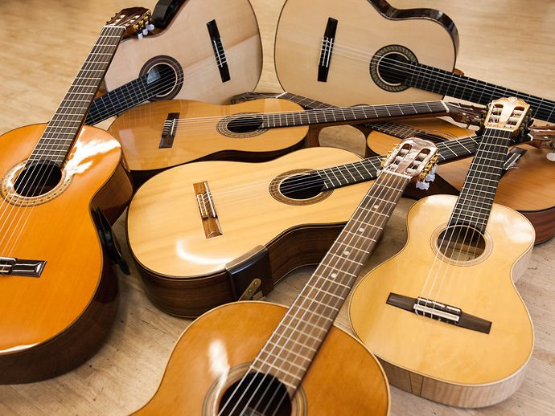
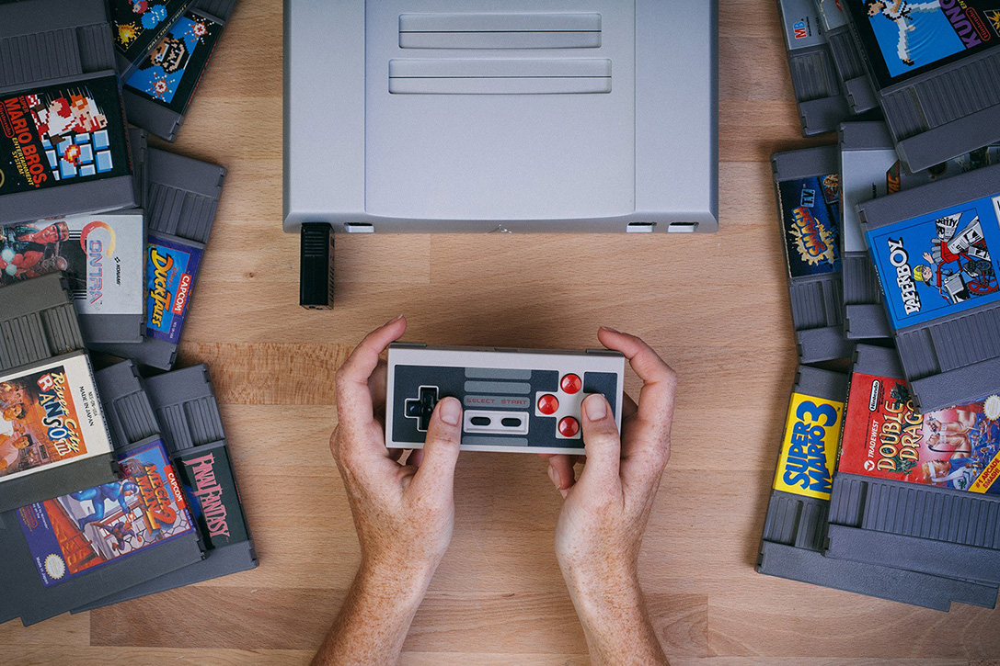

|  | Gitarre spielen:Schon seit 6 Jahren spiele ich leidenschaftlich gerne Gitarre.Mit 13 Jahren habe ich mich dem Instrumentalkreis der Gemeinde Christus unser Friede angeschlossen, um mit anderen Jugendlichen musikalisch den Gottesdienst zu bereichern. Bis 2017 bin ich dieser Tätigkeit nachgegangen. |
 |
Reisen:Eine weitere Leidenschaft von mir ist das Reisen. Ich habe Freude daran fremde Landschaften, Kulturen und vor allem Menschen kennenzulernen.Am liebsten halte ich meine Eindrücke in Fotos und Videos fest. |
|  | Zocken:Ja, ich bin ein kleiner Gamer. Egal ob Mario, the Legend of Zelda, oder Resident Evil.Ich habe großen Spaß daran, ein Held zu sein und mich durch spannende Abenteuer zu kämpfen, um furchtlos das Böse zu besiegen. |